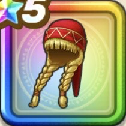

ベロニカの帽子
攻略班 9.5点 / 鳥系への耐性+5%虫系への耐性+5%悪魔系への耐性+5%虫系への耐性+5%じゅもんダメージ+8%メラ属性じゅもんダメージ+8%【晴れ】スキルの暴走ダメージ+1%
くわしい特徴
【レベル別習得スキル】 Lv1鳥系への耐性+5% Lv8虫系への耐性+5% Lv10じゅもんダメージ+8% Lv12メラ属性じゅもんダメージ+8% Lv15【晴れ】スキルの暴走ダメージ+1% Lv18魔力の暴走率+3% Lv20悪魔系への耐性+5% Lv23さいだいMP+5 Lv25虫系への耐性+5% 【限界突破スキル】 1凸攻撃魔力+12 2凸すばやさ+12 3凸守備力+12 4凸さいだいHP+12